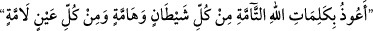

benzerini daha görmedim” dediğinde mutlaka nazarı değer ve o baktığı şeyin helâk
olmasına yol açardı. Kureyş kabilesinin kâfirleri, böylesine gözü değen kişilerden
birisinden Peygamberimiz (s.a.) hakkında, “onun benzerini görmediğim gibi, getirmiş
olduğu delillerin mislini de görmüş değilim” şeklinde söylemesini istemişlerdi.
Böylece Hz. Peygamber’e nazar değdirmiş olmayı istiyorlardı. Böylece cemâl güneşi, o
kötü bakışın tesiriyle bu âlem sahasından yok olsun, gitsin. Allah Teâlâ, rasûlünü
onların şerrinden korumuştu.
Hâfız der ki:
Üns meclisinin huzûru var, dostlar bir araya gelmiş
Göz değmesin, “Ve in yekâdu”yu okuyun ve kapıyı kapatın.
Kâşifî, âyetteki “innehû le mecnûn” ifâdesini; doğrusu bu adamı cin ele geçirmiş, yâni
o bir cinlidir ve bu cin ona tâlim ediyor, şeklinde îzâh etmektedir.
Hasan Basrî (k.s.) der ki: Göz değmesinin ilacı tefsirini yaptığımız bu âyet-i kerîmeyi
okumaktır.
el-Esraru’l-muhammediyye isimli eserde ifâde edildiğine göre; bu âyetin herhangi bir
kağıda yazılıp rukye olarak taşınması, okunan suyu ile tüm vücûdun yıkanması ve yine
okunmuş suyunun içilmesi durumunda nazar değmesini savuşturma özelliği vardır.
Bir hadis-i şerifte “göz haktır” yâni gözün başkalarına değmesi haktır buyurulmuştur.
[58] Âlimlerin ifâdesine göre nazar, herhangi bir şey kemaline erdiği zaman değer. Her
kâmil olan şeyi, Allah’ın kaza ve kaderi gereği bir bozulma izler. Takdir-i ilâhi, göz
değmesinden sonra ortaya çıktığı için bu takdir, nazara izâfe edilmiştir.
Yakup (a.s.) Mısır’a giden oğullarına güzellik, güç, boy-bos verildiği ve hepsi bir
babanın oğlu oldukları için kendilerine nazar değmesinden korkmuş ve şöyle demişti:
“Oğullarım! (şehre) hepiniz bir kapıdan girmeyin, ayrı ayrı kapılardan girin.”
(Yusuf, 12/67) Yakup (a.s.) oğullarına nazar değmesin diye şehrin giriş kapılarına
dağılmalarını istemişti.
Peygamber (s.a.) torunları Hz. Hasan ve Hüseyin’i göz değmesinden korumak için;
derdi. “Her şeytan ve zehirli hayvandan, her kem gözden Allah’ın tam kelimelerine
sığınırım.” Peygamberimiz (s.a.) bu duânın, ardından: “İbrahim, İsmail ve İshak
peygamber de böyle yaparlardı” buyururdu.[59]
Ubâde b. Sâmit (r.a.) anlatıyor: Bir gün sabahleyin Peygamberimiz (s.a.)’in huzûruna
girdim. Çok şiddetli ağrılar içinde kıvranıyordu. Aynı günün akşamına doğru tekrar
ziyâretine geldiğimde sıkıntılarından kurtulmuştu. Efendimiz (s.a.) şöyle buyurdu:
“Cebrâil bana geldi ve rukye yaptı: Allah’ın adıyla, sana eziyet veren herşeyden, her
kem göz ve her kıskançtan şifâ diliyorum. Allah sana şifâ versin, dedi. Ben de o